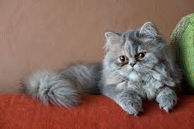
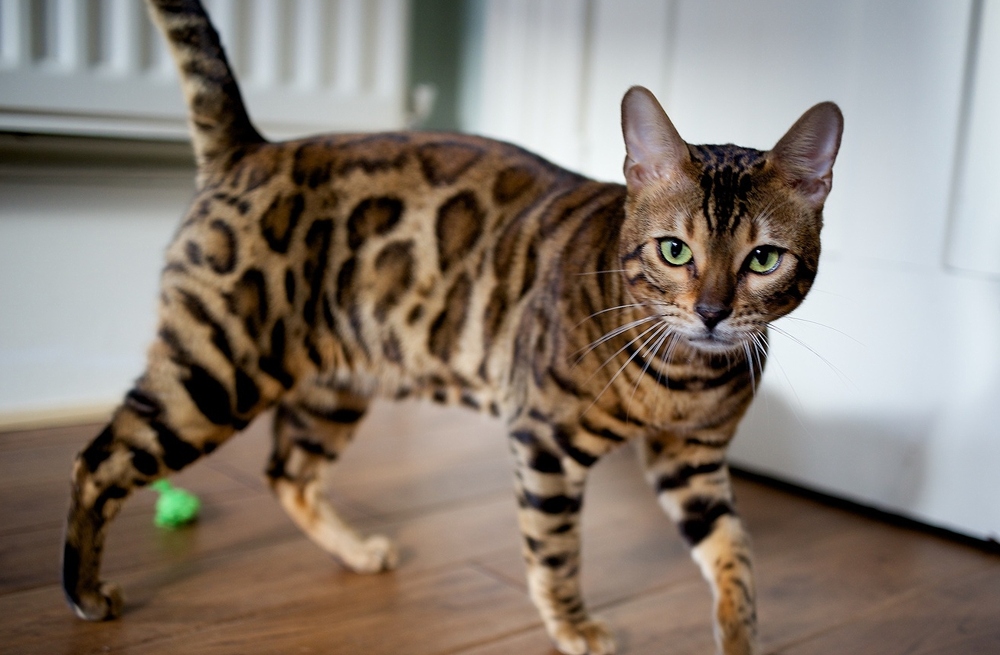
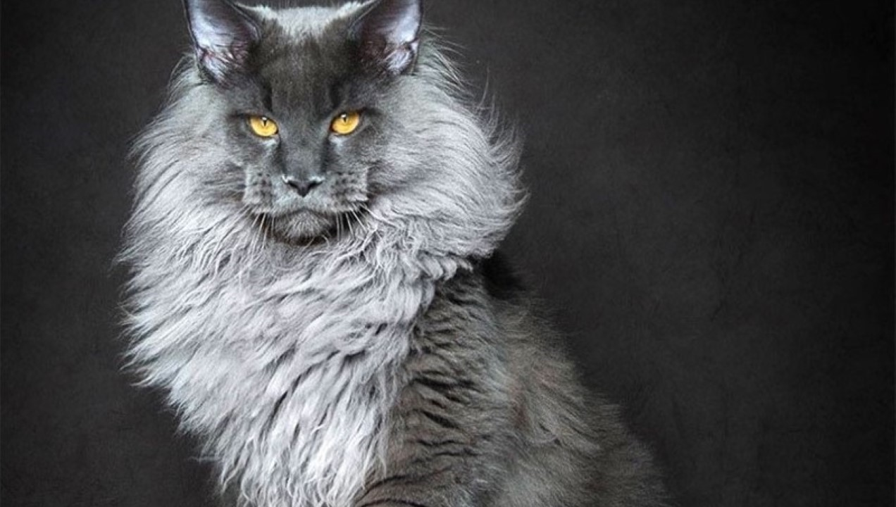
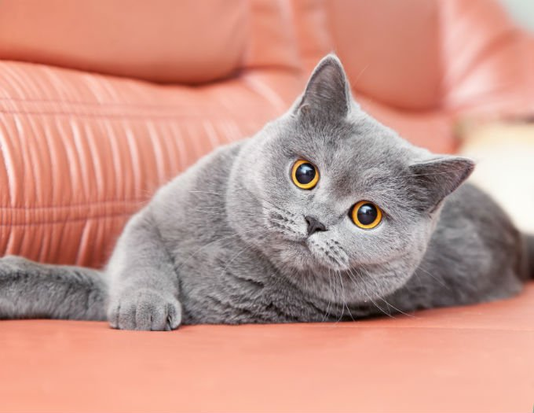
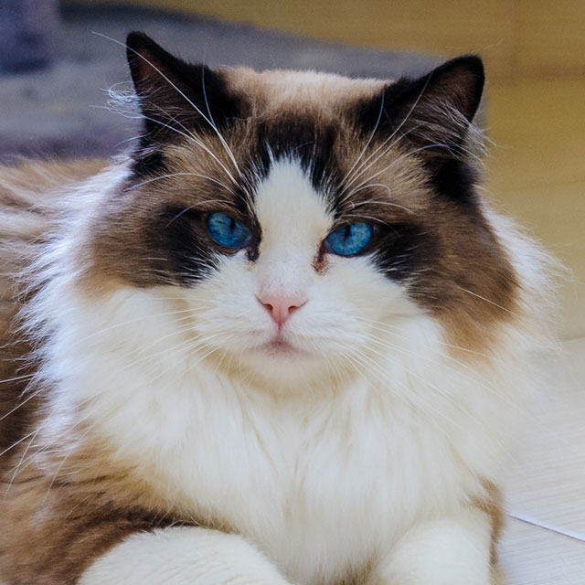

Gato Persa

Uma das características mais marcantes do gato Persa é, com certeza, sua pelagem extensa. Ela é solta, quase esvoaçante, e está por todo o corpo do animalzinho. Isso deixa o felino ainda mais fofo e charmoso. Os pelos de diferentes tonalidades
contradizem o pequeno corpo do felino. Entre as condições que marcam o gato Persa estão sua cabeça bem redonda, cauda curta e avantajada, além dos olhos grandes. Isso sem falar nas pequenas orelhas com pontas redoandas que aparecem em
meio à pelagem.
Bengal - Gato-de-Bengala

O Bengal, também conhecido como gato-de-bengala, é uma raça recente e híbrida, que surgiu do cruzamento de gatos doméstico com um gato selvagem asiático (o chamado Leopardo Asiático), no sul da Ásia. O primeiro exemplar da raça Bengal surgiu
em 1963, mas a raça só passou a ser considerada oficialmente em 1985. Considerado um gato dócil, companheiro e ao mesmo tempo independente, ele é também muito forte e atlético. O padrão de seus pelos se assemelha ao de um leopardo, fazendo
com que ele seja um gato considerado muito bonito e exótico.
Maine Coon

Com um comprimento que pode chegar aos 100 centímetros, a raça Maine Coon é uma das maiores raças de gatos domésticos. Ele é considerado a raça americana de pelo longo mais antiga de todas. Sua origem é desconhecida, mas a suspeita é que ele
seja um cruzamento de gatos europeus de pelo longo com gatos americanos de pelo curto. O gato gigante Maine Coon é conhecido no mundo como “gigante gentil”. Além disso, ele é muito lembrado por sua habilidade em caçar. No Brasil, só há
registro desses gatos nas últimas duas décadas.
Pelo Curto Inglês

Como um gato poderoso, todos os componentes dessa raça devem ser bem desenvolvidos. O Inglês de Pelo Curto tem a caixa torácica larga, pescoço musculoso, mandíbulas fortes e focinho bem desenvolvido. As pernas são espessas e fortes. A raça
parece ser aquilo para o que foi originalmente programado, um gato feito manter os roedores foram do celeiro e da casa. A pelagem do Inglês é espessa e densa. Ela fica muita mais longa e mais espessa durante o inverno. A textura da sua
pelagem é relativamente sólida já que serve como proteção para o gato. Quando você pega um Inglês, você deve sempre apoiá-la na parte final das costas. O Inglês não deve ter as patas traseiras levadas até o abdômen, pois isso pode fazer
com que fique desconfortável e inseguro.
Ragdoll

Conhecida como uma raça de gatos que se comporta muito parecido com cães, os ragdolls são altamente treináveis, algo que não é muito comum quando falamos de felinos domésticos. Truques como pegar a bolinha podem ser facilmente ensinados com
a técnica do reforço positivo. Eles são gatos bastante dóceis e cheios de energia e se dão muito bem com crianças e outros animais - inclusive cachorros. Os gatos dessa raça geralmente são bem maiores em relação aos demais. Não muito populares
no Brasil, seus criadores estão ganhando força nos últimos anos.
Siamês

Os gatos siameses são considerados gatos muito sociáveis e leais. Eles adoram brincar, são muito apegados aos humanos e procuram fazer parte das atividades diárias deles. Siameses adoram adultos, crianças - e conseguem acompanhar bem o ritmo
delas, principalmente quando filhotes - e se dão bem com outros animais também. Eles gostam muito de atenção e por isso estão constantemente miando e pedindo por afagos. Os seus olhos de cor azul-safira são muito característicos da raça.
Existem MUITAS espécies de gatos no mundo mas, infelizmente, ninguém sabe muito sobre(a não ser os especialistas, aparentemente), o que é uma pena pois esses derretedores de corações são tão merecdores da nossa atenção quantos os pulguentos😻😻😻😻.
Veja mmais sobre raças de gatos, o quão carinhosas e "elétricas" elas podem ser.
A primeira vista, os gatos são preguisos e anti-páticos, mas nem mesmo os tão queridos pulguentos tem tantos tantos memes quanto os nossos felinos
sentimentais e delicados😼😼😼